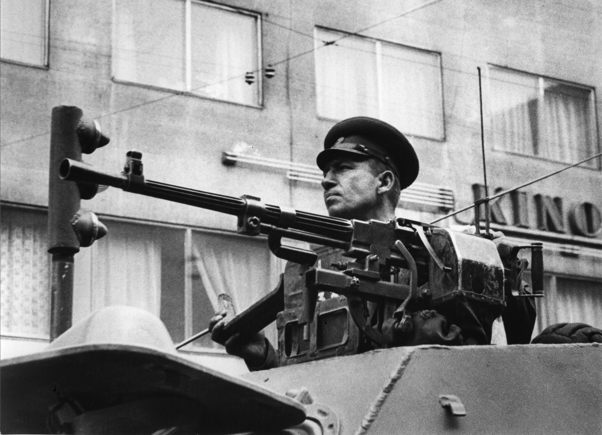
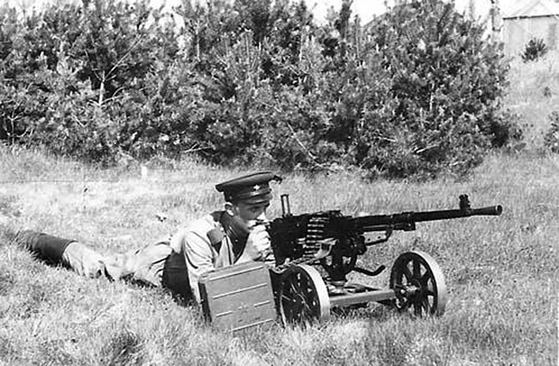
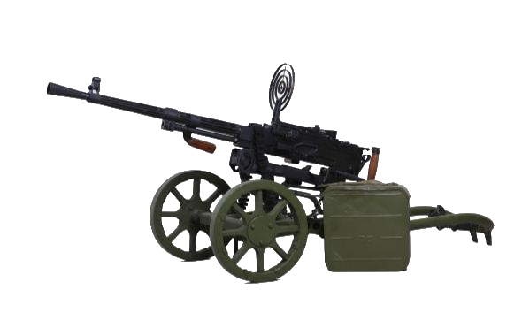

Проблема станкового пулемёта как оружия поддержки пехоты батальонного звена к началу Великой Отечественной войны так и не была решена. У каждого вида были свои непреодолимые недостатки, такие как большая маса, жидкое охлаждение ствола и другие. Надежды же, возлагавшиеся перед войной на пулемёт ДС- 39, не оправдались, и перед самой войной его пришлось снимать с производства.
Поэтому весной 1942 года была начата разработка нового станкового пулемета под штатный патрон от винтовки Мосина. И тут весьма кстати пришлась довоенная разработка пулемёта ГВГ, успешно прошедшего заводские испытания в 1940 году.
 СГ-43
Создателями пулемёта были конструктор П. М. Горюнов, его племянник Михаил и заводской мастер В. Е. Воронков. Именно из их фамилий и было составлено название пулемёта ГВГ. Основным конкурентом ГВГ на испытаниях стал пулемёт ДС‑43, но пулемет Горюнова выйграл в таких важных показателях как кучность стрельбы, живучесть деталей и количеству отказов в работе. Ознакомившись с этими результатами, сам Дегтярёв убедил Сталина в том, что пулемёт ГВГ достоин принятия на вооружение.
Четырнадцатого мая 1943 года пулемет Горюнова был принят на вооружение под обозначением «7,62-мм станковый пулемет конструкции Горюнова обр. 1943 года» (СГ‑43). Специально для его производства на Ковровском заводе всего за 2,5 месяца был построен новый цех. Первые серийные пулеметы ушли на фронт в середине осени 1943 года, а с 1944 года к производству СГ-43 подключился завод в Златоусте.
В целом, до конца Великой Отечественной войны было изготовлено и передано в действующую армию свыше 80 тыс. СГ-43.
Боевая скорострельность - 250—300 выстрелов в минуту.
Охлаждение ствола — воздушное.
Прицельное приспособление пулемёта Горюнова состоит из мушки и прицела.
Вес "тела" пулемета 13,8кг
Вес пулемета со станком и бронещитом (без патронов) 40,4кг
Вес станка 26,6кг
Длина "тела" пулемета 1150мм
Длина ствола пулемета 720мм
Высота линии огня по наземным целям 500мм
Высота линии огня по воздушным целям 1460мм
Прицельная дальность стрельбы (легкая пуля) 2000м
Прицельная дальность стрельбы (тяжелая пуля) 2300м
Предельная дальность полета пули 5000м